SUSI ALBERTA
Susi es una muñeca que vive en mi piso. Mi compañera de piso Ánxela la encontró por la calle y decidió traerla a vivir con nosotras. Al principio me daba un poco de miedo por lo que Susi pasó todo el verano encerrada en un armario. Un día decidimos sacarla y desde entonces, poco a poco le hemos ido cogiendo cariño y la hemos tuneado progresivamente. Ahora ya forma parte del piso.
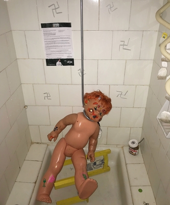 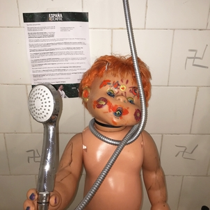Un día, Susi estaba apoyada en la ventana cuando de repente se cayó en el techo de nuestro vecino de abajo, quien resultó ser nuestro casero. Después del accidente tuvimos que atarla al radiador durante unos meses para que no se volviese a producir otra caída
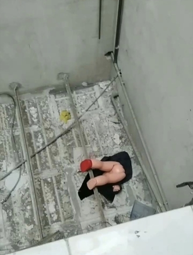 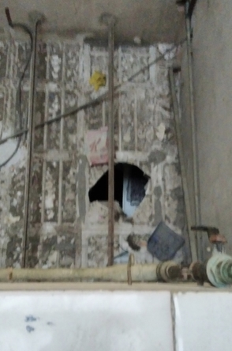Para un proyecto, nuestra amiga paula decidió hacer un molde utilizando la pierna de Susi, y todavía no se la ha devuelto.
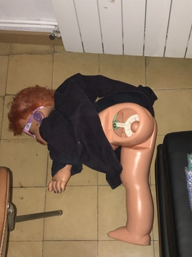BEBÉ
El bebé es el último en incorporarse al piso. Lo compré en el mercado dels encants por 2€ y desde entonces ha ocupado mucho tiempo en mi vida ya que ha sido el objeto clave de este proyecto. En un principio mi intención sólo era la de hacer un video personificándolo, pero durante el proceso el video fue dejando de ser importante y lo que realmanete importó fue toda la experiencia de convivir con él durante estos dos meses. Todavía no tiene nombre propio pero no lo necesita.
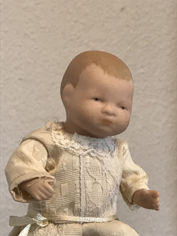 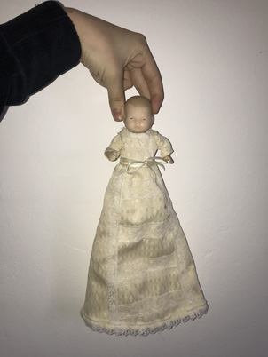 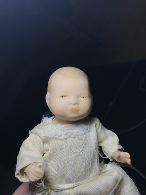 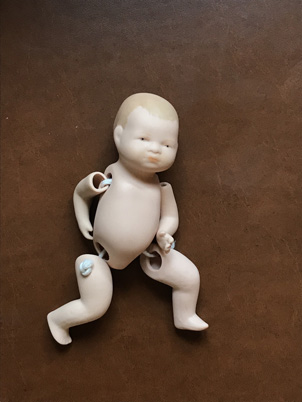 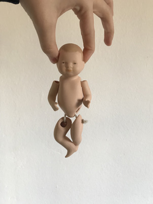 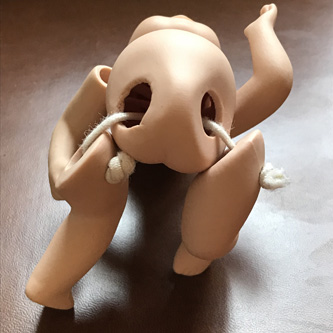OPERACIÓN
El bebé vino en avión conmigo a Mallorca,y aunque lo llevé en la bolsa de mano, acabó rompiendose el brazo, por lo que tuvo que ser operado. Videos de la operación:
Resultado después de la operación:
SUSI Y BEBÉ SE CONOCEN!
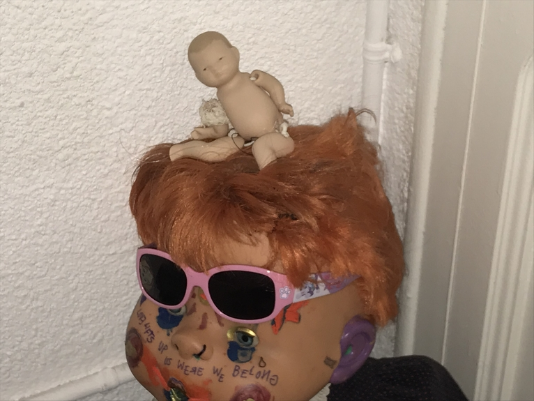